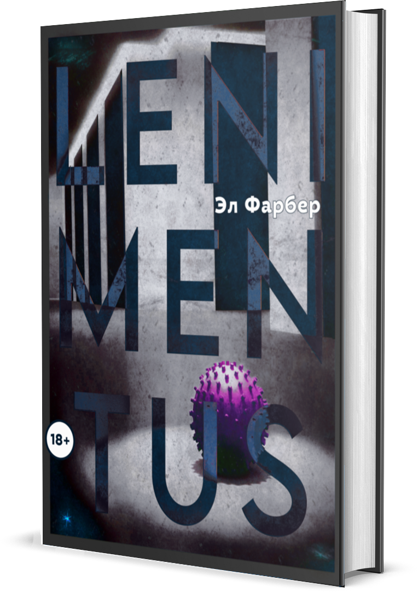

Рано или поздно это должно было случиться. Разработанная человеком сеть искусственных интеллектов, питавшая саму жизнь, обернулась против него. Планета была очищена и преобразована. Остатки человечества укрылись под энергетическим куполом неприступного «Квадрата Совета». Барьер надёжно защищает от угроз извне, но способен ли он уберечь порядок внутри? Есть ли у утративших самих себя людей право на то, чтобы вновь встать во главе мироздания, или их участь предрешена неумолимым Усовершенствованием?
 ЧИТАТЬ